What are Web Components?
Using multiple web API's and technologies you can create create custom, reusable, encapsulated HTML tags, these are called web components (WC). If you are familiar with HTML you know the language consists of tags. All tags have their own uses, behaviour and can differ in basic styling.
All the relied upon API's and technologies can also be used individually, they all have their own unique use-cases.
In HTML you can also create your own tags by wrapping it in tags, for example; <test> or <example>. These 'custom' elements all function the same because undewater they are actually span tags/elements.
<example> is more like a semi-custom element; it has it's own tag but behaves and looks like a <span> element. Custom Elements are defined in JS and can then be used in HTML.
Web Components allows us to create custom elements and assign markup, styling and behaviour. This way your custom elements have markup, a basic styling and behaviour without stylesheets or scripts.
Drawing a comparison from Web Components to HTML
WC are essentially custom defined HTMl tags which come with their own standard styling and behaviour. This basic styling is defined in the code where the WC is created.
You could look at standard HTMl tags as custom elements defined by the W3C.
Take the <h2> element for example. Without applying custom CSS rules or scripting it's: black, bold, has a custom font-size and custom margin.
The <video> element also has custom attributes such as: autoplay, controls, loop, muted, poster and preload. What these attributes do, how they work etcetera is all defined somewhere but it's not accessible for us developers (we can only overwrite it if necessary).
Advantages of Web Components
- WC can be reused as much as you want to, you only have to define them once.
- WC code/logic is encapsulated, it uses a private scope which means it isn't accessible in the global scope/DOM.
- WC only require basic HTML, CSS and JS. It's future proof and compatible with frameworks.
- Code and logic is contained in one area. Apps are compartmentalized into smaller chunks instead of one big file.
- Custom elements allow for custom tag names, which makes it easier to read HTML and determine which element does what:
WC also improve the maintenance and readability of your code;
<div id="image-carousel"></div> //Standard HTML
//Is better readable as:
<image-carousel></image-carousel> //Custom Element
The Web Component building blocks
As mentioned before, WC rely on a few web API's and technologies. All these API's and technologies can be used on their own (and have their own use-cases) but when used together they create web components.
Custom Elements
Custom Elements are HTML tags defined by you. You can name them, give them custom markup, styling and scripts.
to create a basic custom element you need atleast HTML and JS.
In the HTML you need to insert your custom element.
NOTE: all custom elements need to contain a dash (-) in their name. This is for the parser to indicate it's a custom element. To ensure backwards compatability browser vendors have agreed to not use dashes in new HMTL tags.
<user-card></user-card>
This however won't render anything. If you insert text in the <user-card> element it'll show the text but really it'll act as a <span> element. This is because the element is not a defined HTML tag and thus unknown to the parser, all unknown tags inherit the properties of a <span> element.
To prevent our custom element from being rendered as a <span> element we have to define it in JS. This way the parser will find a definition of the tag and render it with the associated styling.
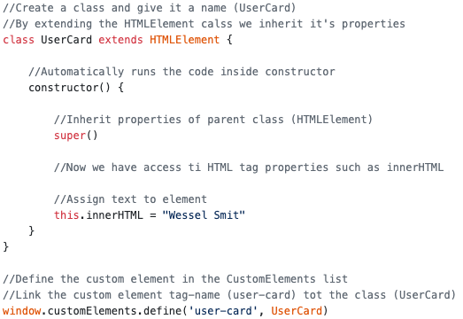The above image shows how to define a custom element in JS
Since the custom element is defined in the CustomElements list the parser knows that <user-card></user-card> should render "Wessel Smit" as defined in the associated UserCard class.
The above code is a simple demonstration, you can ofcourse do way more such as applying styling, adding addEventListeners etc.
Shadow DOM
The Shadow DOM is an encapsulated version of the DOM. This means it's cut off from the normal DOM (also called the light DOM).
The advantage of using the Shadow DOM is that it's content is seperated/inaccessible we call this encapsulated. Basically the Shadow DOM is more difficult to access and is helpful for creating a component and prevent it from inheriting styles or logic from other elements.
It's really difficult to directly manipulate an element in the Shadow DOM outside of the Shadow DOM code. Styles have to be written in the Shadow DOM itself or the Shadow DOM needs to contain a link to the Light DOM styling. (NOTE: Shadow DOM content does inherit properties from their parent elements in the Light DOM)
The Shadow DOM functions as a sub-DOM tree to the light DOM, it's used to encapsulate markup, styles and logic meaning it's used to create self-contained DOM fragments.
Using Shadow DOM
The following images will demonstrate how to use Shadow DOM, the left side is the code and the right side is a preview of what's being rendered.
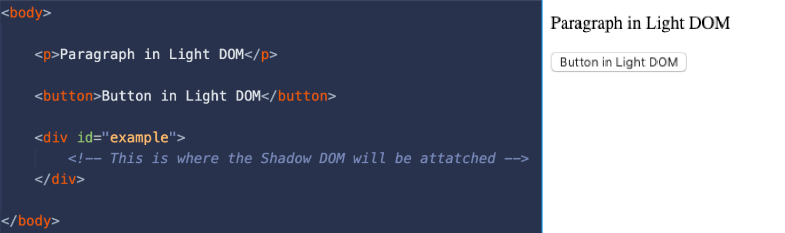The code above renders a simple paragraph and button, it only uses the Light DOM

The code above renders a paragraph and button in both the Shadow and Light DOM
The light DOM structure now contains the Shadow DOM fragment, the Light DOM now contains a piece of Shadow DOM and the structure looks like this:
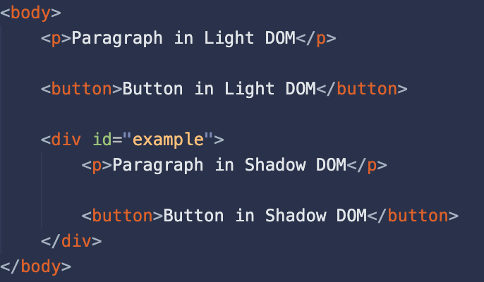Shadow DOM use case
As mentioned before, the Shadow DOM is used to encapsulate markup, styles and logic. The advantage of encapsulation is that after defining the markup, styles and logic they can't be affected outside of the Shadow DOM.
Now that we have some HTML in both DOMs, We apply the following CSS;
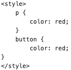The above CSS should make all paragraph and button text red.
In the rendered page only the content from the Light DOM is red. This is because the content from the Shadow DOM isn't accessible for the Light DOM.
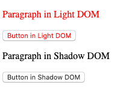As you can see only the content from the Light DOM is red.
The content is accessible through JS, but you have to specifically select the ShadowRoot first.
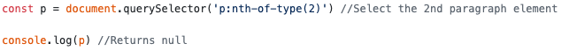This is because JS doesn't have access to the ShadowRoot, to access the paragraph in the ShadowRoot you can't use document. Document is Light DOM only and returns errors in the Shadow DOM. To select elements inside the Shadow DOM you have to replace document with the element hosting the ShadowRoot. (In our case this is the ShadowDOM constant)
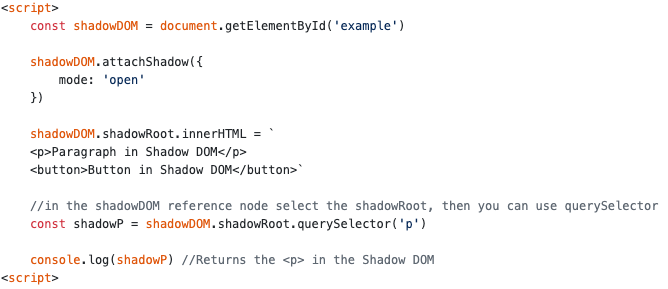HTML Templates
The big advantage of HTML templates is their reusability and their simplicity in your HMTL files. Template elements aren't rendered by default, this means you can use them to store markup for later use. This prevents the hassle of creating markup in JS.
- storing markup which will be rendered at a later point in time
- creating a basic markup foundation which is filled with content in an array iteration
The 2 most common use cases fot HTML Templates are
To show how templates work I'll use a template to render content at a later point in time, this is better than the innerHTML and createElement alternatives because it's more secure and better readable.
First you have to create a template and define the markup inside of it, I'll do that with the following HTML in my index.hmtl:
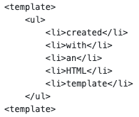The above code is my template, it doesn't get rendered until it's inserted in the DOM using JS
To render the template we have to insert it into the DOM using JS.
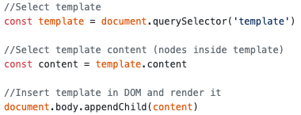The above JS code inserts the template in the DOM
THe following is being rendered:
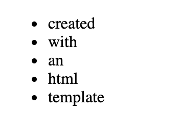However, if you want to use the template multiple times the above code won't work. The appendChild() method will only replace the template position in the DOM with the current code.
To reuse the template you have to create a clone of the template which you insert in the DOM. To create a clone we can use the cloneNode() or importNode() method.
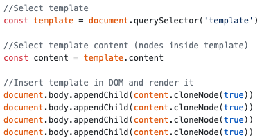Through clones you can reuse templates
With cloning the following HTML is rendered:
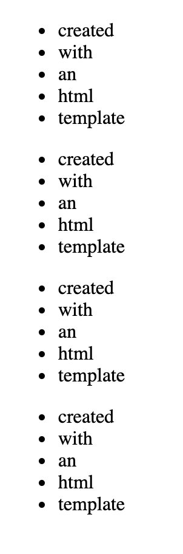Putting it all together
No that I've briefly explained the building blocks for web components and their individual uses, let's examine a example.
The following web component is to show urgent-announcements in a new project of mine. It looks like this:
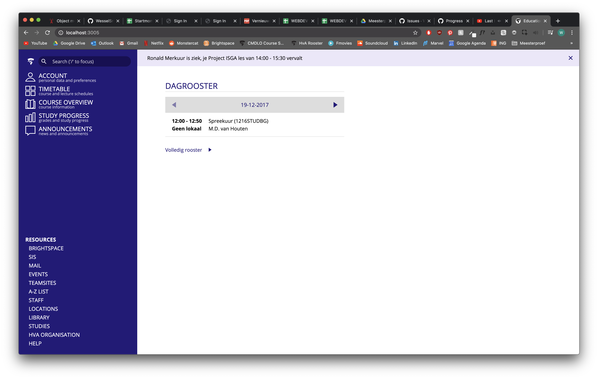 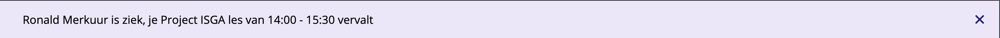Above is the UI and the urgent-announcement web component
The web component is a notification which shows up at the top of the page. It has a message and close button; clicking the close button hides the notification.
How does it work?
Creating the template
First I created a template, this contains the styling and markup.
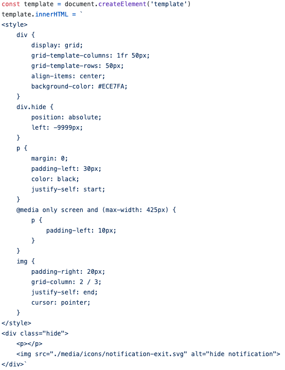This code contains the styling and markup (HTML) for the web component
Other styling such as the custom font used in the component are inherited from the parent elements. This is useful because without it we'd have to @font-face it again only to use it in the web component, which would just be a waste of data.
Defining the template as a custom element
To be able to put the webcomponent in our HTML we'd have to define it as a custom element. To do this we create a class which we define in the window's customElements property.
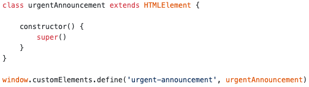Regsiter the custom element as <urgent-announcement>
After registering the class as a custom element we can use it in HTML, however the element as of yet is completely empty.
Initializing the web component
The zero state of the component is empty and hidden, the markup and styling in the template however will show whenever the element is inserted into the DOM. We also want the web component to live in the Shadow DOM instead of the Light DOM.
We do this in the constructor() which is only used whenever the web component is Initialized. Always call super() first to inherit all properties of the class you're extending!
First we want to attach a shadowDOM to the custom element. Then we clone and insert the content of our template into the web component, lastly we set the textContent of the notification (there is no content as of yet so it'll insert "").
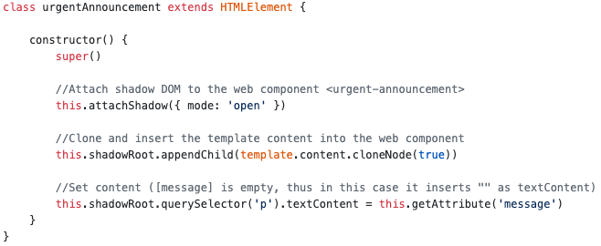Receiving new data from the server
I wanted an element which updates itself with the data it receives from the server. So I use socketIO to send data to the clients without refreshing the page.
The above code is the HTML code, it's the registered custom element called urgent-announcement. It has a message attribute which contains the message it displays and it has an uid attribute to identify the notification.
On the clientside I listen to the urgent-announcement event which is emitted by the server whenever it sends data, when it receives a notification this function triggers. It then overwrites the message & uid attribute values with the content of the new data.
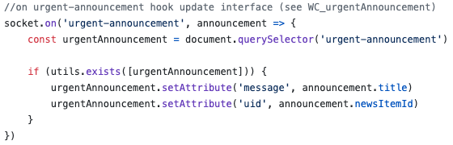The above endpoint receives data from the server
The displaying of the message & keeping track of show/hide state is done in the web component itself (encapsulated in the Shadow DOM).
Updating the web component
Whenever the server has a new notification it gets sent to the client using socketIO. On the client the urgent-announcement element message & uid attributes are overwritten with the new data from the server.
Inside the custom element we want to trigger an update whenever the client receives new data. Since our function updates the message & uid properties we can simply watch these attributes in our class.
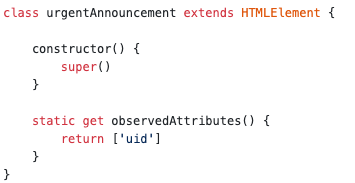The observedAttributes() method watches the passed attributes, in our case we only watch uid (we deliberately don't watch messagage because this would trigger everything twice).
Whenever one of the observed attributes is changed the attributeChangedCallback gets invoked. In here we can control what actions we want to undertake.
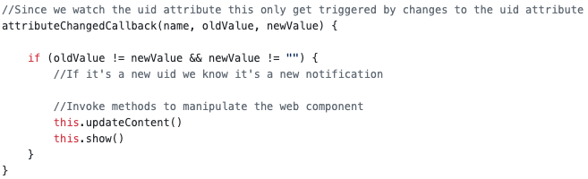Watch for changes and invoke methods to reflect the attribute changes in the UI
We use methods to manipulate the web component, all methods use the 'this' keyword which references the webcomponent host (<urgent-announcement>).
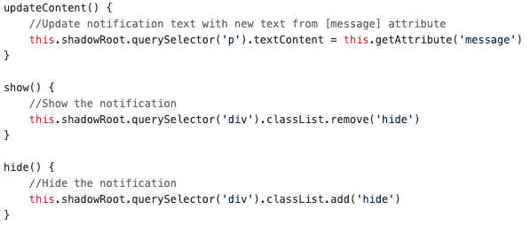Add methods to: update the content, show and hide the component respectively
The only thing we have't done is listening to the close button events, we need to know if people have clicked to dismiss the notification.
We can add an eventListener in the construcor(), when triggered we hide the web component.
NOTE: we could've also used the connectedCallback to add EventListeners, and the disconectedCallback to remove the eventListener.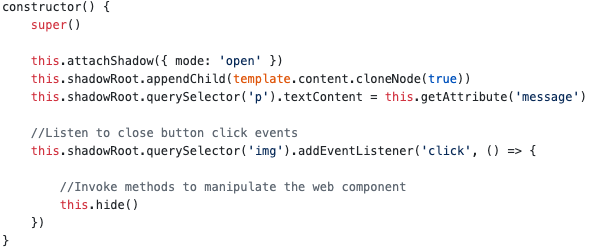
Full Web component code
NOTE: added some extra logic to the component to also keep track of dismissed/read notification in localStorage.
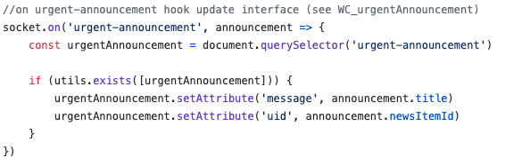 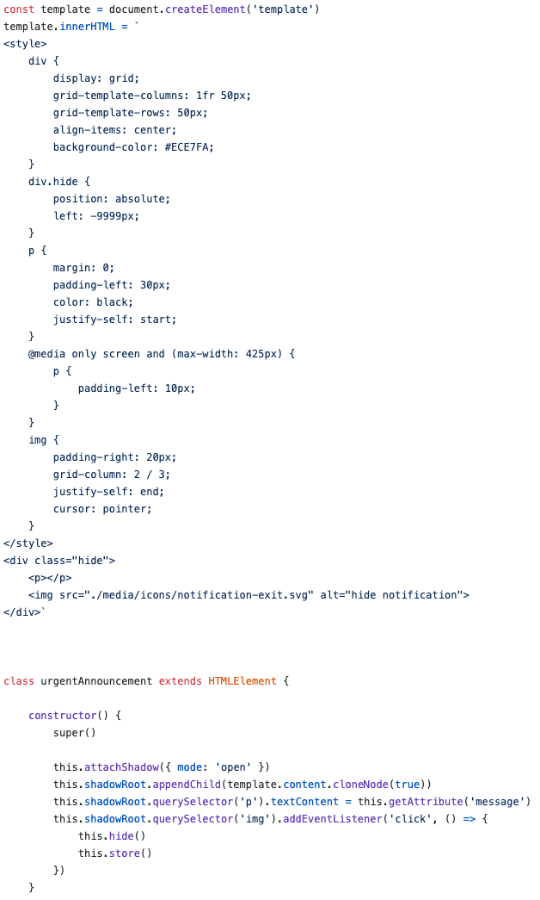 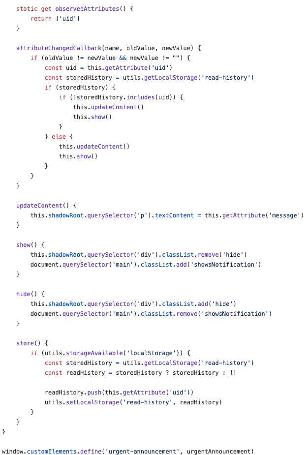Conclusion
Each web API has it's own powerful use cases, but they can also be used together to create web components. Using HTML templates you can bundle markup (also styling and scripting) into one template element.
By defining the template in the Shadow DOM you can encapsulate it and make sure it isn't affected by CSS or JS outside the Shadow DOM.
Custom Elements are used to store everything in a custom tag. This custom element will make your code easier to read and can help organize your HTML.